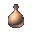

| 圖片 | 中文名稱 | Name | 重量 | 材料 | 效果 |
| 紅色藥水 治癒藥水 |
red potion potion of healing |
7.815 | 玻璃 | 回復約15體力 | |
| 橙色藥水 強力治癒藥水 |
orange potion potion of extra healing |
9.77 | 玻璃 | 回復約25體力 | |
| 白色藥水 終級治癒藥水 |
clear potion potion of greater healing |
11.72 | 玻璃 | 回復約50體力 | |
| 翡翠藥水 解毒藥水 |
cyan potion potion of cure poison |
7.81 | 玻璃 | 解除身上所有毒，包括定時扣血、麻痺和禁言的毒 | |
| 綠色藥水 自我加速的藥水 |
green potion potion of haste self |
23.4 | 玻璃 | 攻擊和行走速度加快約1.2倍，時限為7分鐘 | |
| 勇敢藥水 | Potion of Bravery | 15.62 | 玻璃 | 騎士專用，攻擊和行走速度加快約1.2倍，時限為5分鐘，配合綠色使用時可以加快約1.5倍 | |
| 慎重藥水 | Potion of Wisdom | 15.62 | 玻璃 | 法師專用，魔攻+2，時限為5分鐘 | |
|  | 黑色藥水 失明藥水 |
opaque potion potion of blindness |
15.62 | 玻璃 | 使用後畫面會變黑，看不見周圍的人，但配合浮遊眼的肉可以看見隱身目標及其他目標的光圈 |
| 藍色藥水 瑪那藥水 |
Blue Potion Potion of Magic Ability Recovery |
玻璃 | 補約50魔力，尚未在遊戲出現 | ||
| 濃縮體力恢復劑 | Concentrated Potion of Healing | 3.907 | 玻璃 | 回復約15體力，重量為紅色藥水的一半 | |
| 濃縮強力體力恢復劑 | Concentrated Potion of Extra Healing | 4.885 | 玻璃 | 回復約25體力，重量為橙色藥水的一半 | |
| 濃縮終極體力恢復劑 | Concentrated Potion of Greater Healing | 5.86 | 玻璃 | 回復約50體力，重量為白色藥水的一半 | |